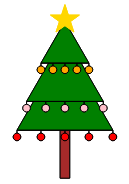
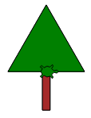

Le but de l'activité et d'obtenir un sapin décoré comme ci-dessus.
On utilise pour cela le module turtle, donc il est indispensable de commencer par valider ( [Ctl]+[Entrée] ) la ligne suivante :
from turtle import *
Commençons par dessiner le tronc¶
Avancer et tourner la tortue
forward(20)fait avancer la tortue de 20 pixels.right(90)fait tourner dans le sens horaire la tortue de 90°.
Question 1 Tester le code suivant puis le compléter pour faire revenir la tortue à son point de départ :
forward(20)
right(90)
forward(100)
...
done()
Question 2 Compléter la fonction suivante, pour qu'elle dessine le tronc du sapin (un rectange de 10px de large sur 50px de haut).
Définir une fonction
Une fois définie la fonction tronc, on pourra, à tout moment redessiner ce tronc en appelant cette fonction : tronc()
Colorier une zone
fillcolor("brown")définit la couleur de coloriage du dessin en marron.begin_fill()puisend_fill()commence et termine le coloriage.
def tronc():
""" Dessine le tronc du sapin """
fillcolor("brown")
begin_fill()
forward(5)
right(90)
forward(50)
...
end_fill()
Question 3 Tester votre fonction en validant la cellule suivante :
Respecter les contraintes suivantes :
La tortue doit finir son dessin en haut, au milieu et tournée vers la droite.
tronc()
done()
Dessinons un branchage¶
Question 4 Compléter la fonction suivante, pour qu'elle dessine un branchage sous la forme d'un triangle équilatéral vert de côté taille :
def branchage(taille):
""" Dessine un triangle équilatéral, vert, de côté 'taille' """
fillcolor("green")
begin_fill()
...
end_fill()
branchage(100)
done()
Question 5 Tester et ajuster la fonction branchage pour que l'exécution (sans modification) de la cellule suivante dessine correctement le branchage au dessus du tronc :
Attention
La tortue commence et finit son dessin au mileu du bas du triangle.

tronc()
branchage(100)
done()
Ci-dessous, on a repris le même programme, complété de trois lignes.
Question 6 Le tester et expliquer les lignes 3, 4 et 5.
tronc()
branchage(100)
penup()
backward(50)
pendown()
done()
Dessinons les boules colorées¶
Question 7 Tester le code ci-dessous permettant de dessiner une boule colorée :
Quelques couleurs utilisables
blue, orange, green, red, purple, brown, pink, gray, olive, cyan, black, white, magenta, yellow. gold.
def boule(couleur):
""" Dessine une boule de la couleur demandée. """
fillcolor(couleur)
right(90)
forward(3)
right(90)
begin_fill()
circle(4,360)
end_fill()
right(90)
forward(3)
right(90)
boule("red")
hideturtle()
done()
Question 8 Écrire les appels de fonctions nécessaires au dessin du sapin décoré avec 5 boules également réparties.
tronc()
branchage(100)
penup()
backward(50)
pendown()
boule("red")
...
hideturtle()
done()
Pour dessiner tous les brachages du sapin, on souhaite écrire une fonction qui dessine directement un branchage décoré.
Question 9 Compléter :
def branchage_decore(taille, couleur):
""" Dessine un branchage de la taille demandée
décoré d'une guirlande de 5 boules de la couleur demandée."""
branchage(taille)
...
boule(couleur)
...
Question 10 Compléter le code ci-dessous pour terminer le dessin du sapin, en ajoutant
- un branchage de 80 pixels de côté, 30 pixels plus haut
- un branchage de 50 pixels de côté, encore 40 pixels plus haut
speed(10)
tronc()
branchage_decore(100, "red")
...
done()
Dessinons une étoile au sommet¶
Question 11 Vérifier que la fonction suivante dessine un triangle équilatéral (comme branchage) et modifier ses valeurs (pas ses instructions) pour qu'elle dessine une étoile à 5 branches.
def etoile_5():
""" Dessine une étoile à 5 branches """
color("green")
fillcolor("green")
begin_fill()
for numero_branche in range(3):
forward(30)
left(120)
end_fill()
etoile_5()
hideturtle()
done()
Question 12 Terminer votre dessin en plaçant l'étoile au sommet du sapin décoré.
speed(10)
tronc()
branchage_decore(100, "red")
...
done()